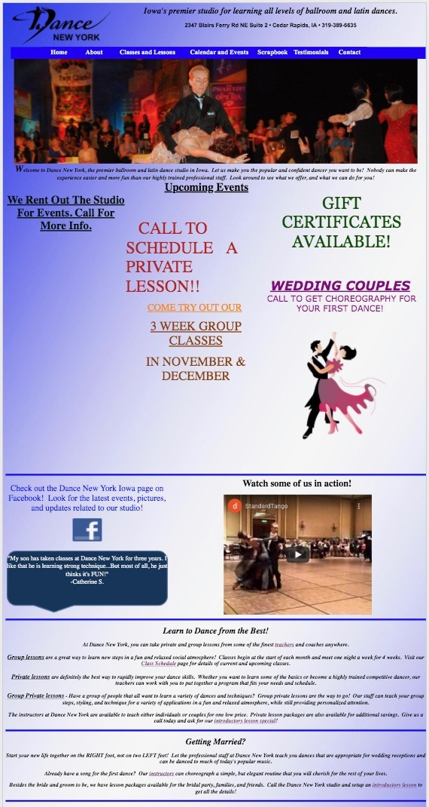
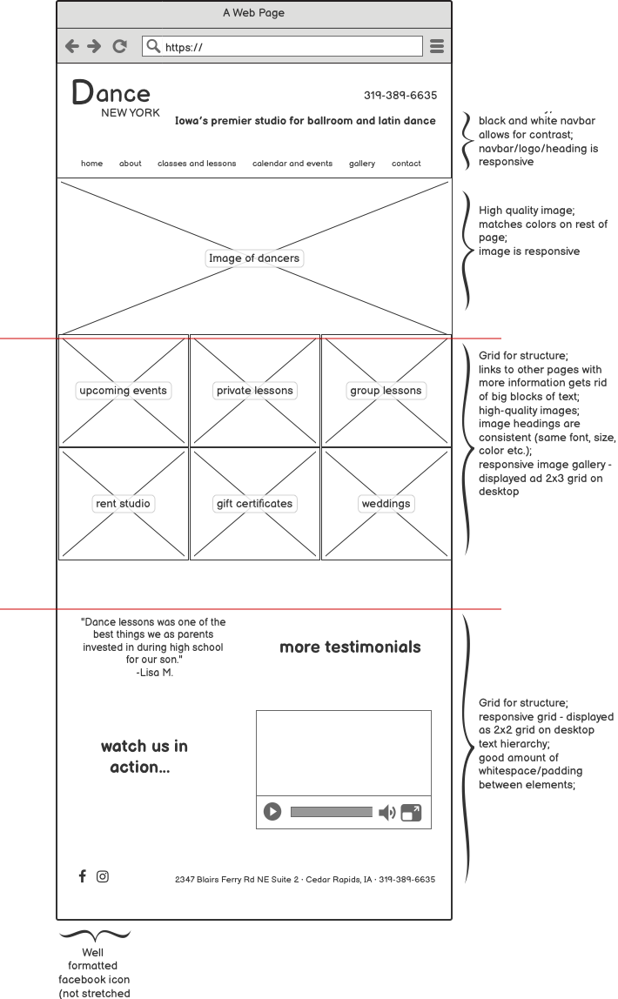
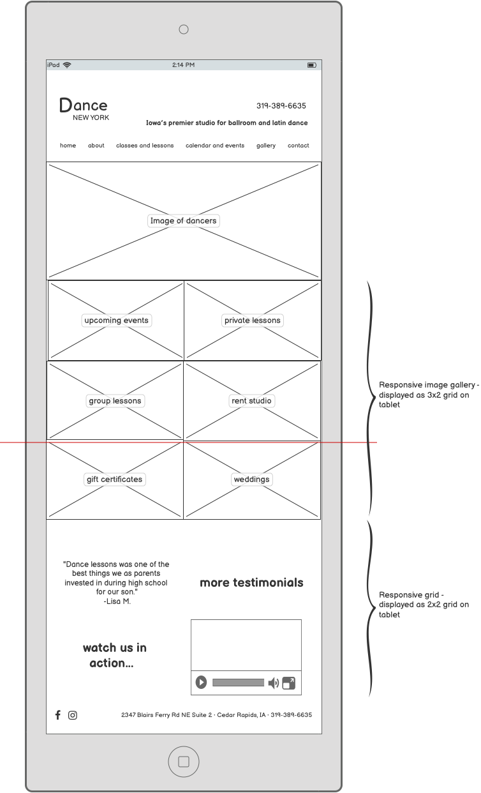
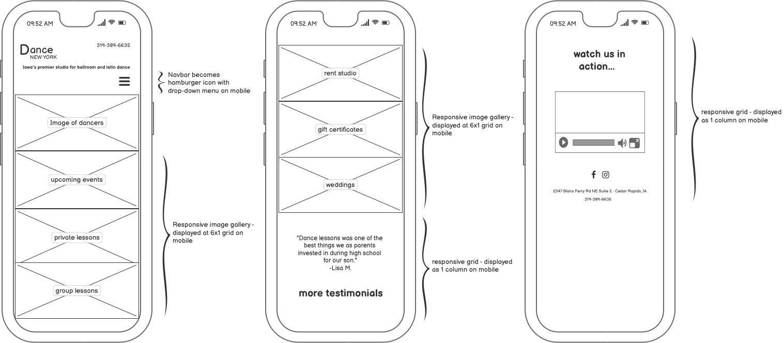
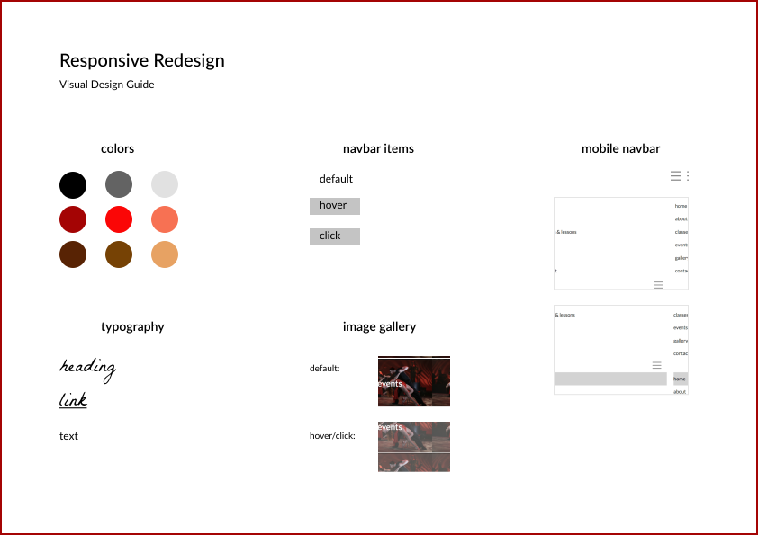

This morning, as I was making coffee, I heard my roommate let out a sigh of frustration.
“What’s wrong?”, I asked her.
“Ugh I’ve been trying to submit this thing on this website for hours and it just doesn’t work!”
Let’s face it, we’ve all experienced problems like these in the past. Whether it’s a website that doesn’t
work properly, or you can’t seem to find what you’re looking for, or maybe the website is just straight up
ugly.
In this article, I’m going to walk you through how I redesigned a website. I’ll start by discussing the problems
with
the original website, then move on to low-fidelity and high-fidelity prototyping, and then show you the final
product.
This is the website that we're going to be redesigning
(link to website here)

Let’s get started!
usability + accessibility
usability issues with the old website:
Lacking consistency: too many different font sizes but no text hierarchy. Text is in too many colors and bad
color combinations. Some text is randomly
underlined, bolded, or italicized. Not enough padding and whitespace between specific elements
Website is not responsive i.e. its appearance does not adapt to the screen size or the device that it is
viewed on
No structure/columns/grid - text is randomly dispersed around the page
Poor contrast between bright blue navigation bar and background
A lot of text at the bottom of the page
Facebook icon is stretched
Poor quality images
accessibility issues with the old website:
Missing language: language is needed to allow screen readers to read content in appropriate language
No page regions or ARIA landmarks defined: This makes it difficult for a screen reader to know in which order
to read the content
Underlined text does not link to anywhere, even though underlines universally indicate linked text
Some text are heading elements but not true headings
low-fidelity wireframing
First, I used balsamiq to create low-fidelity wireframes for a desktop, tablet, and mobile device.
desktop wireframe

tablet wireframe

mobile wireframe

high-fidelity prototyping
Then, I used figma to create high-fidelity prototypes for a desktop, tablet, and mobile device.
desktop prototype
tablet prototype
mobile prototype
visual design style guide

redesign
And finally, here is the link to our beautiful final product ♥
redesign takeaways:
The redesigned website is responsive i.e. adapts to the size of the browser and to different devices
Looks good when changing the font size of the browser
Website includes language attribute which allows screen readers to know which language to read it in
Website has a grid structure which allows a screen reader to know in which order to read the contents
Instead of having regions with big blocks of text, the redesigned website would link to pages with additional
information e.g. the "events" image would link to a page containing information on upcoming events.